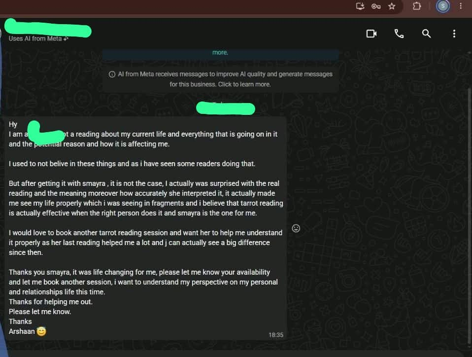
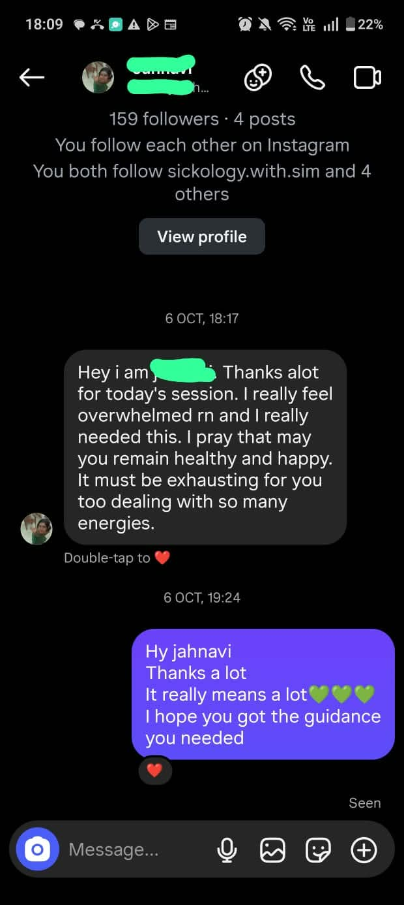
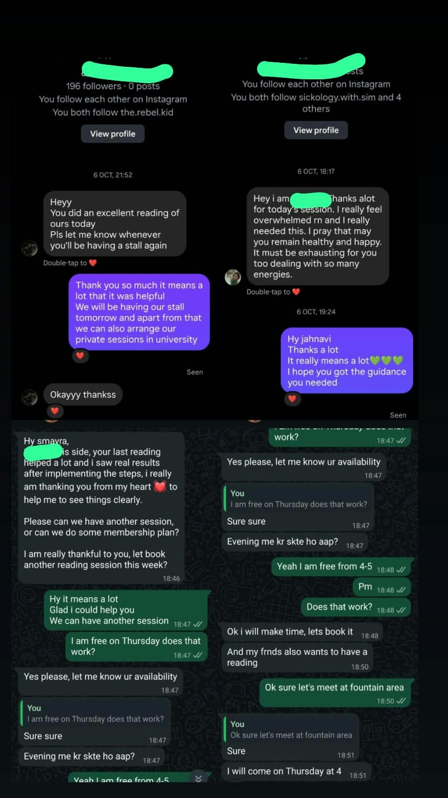
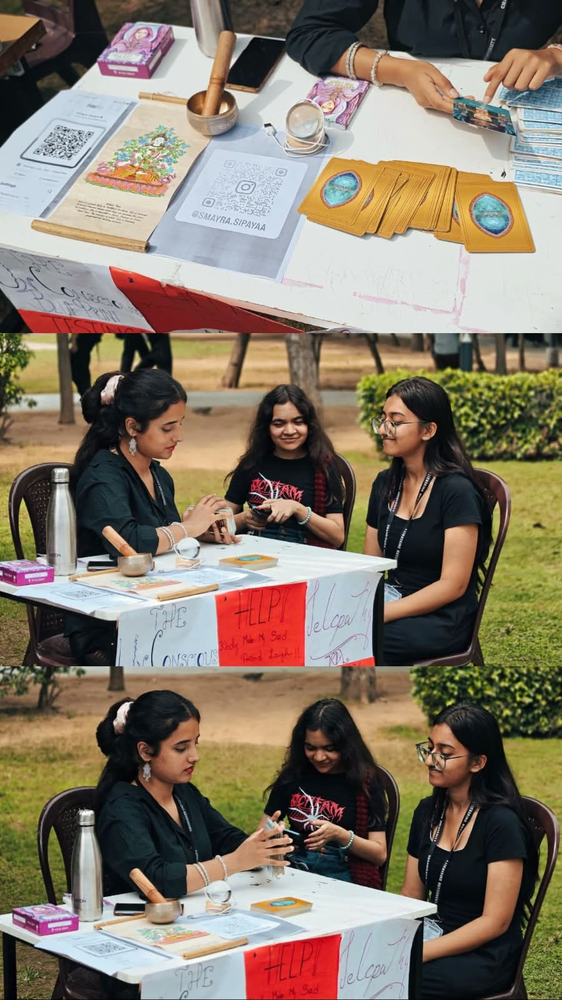
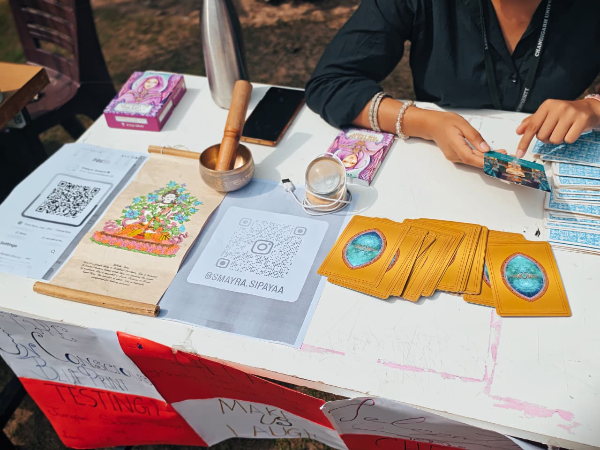
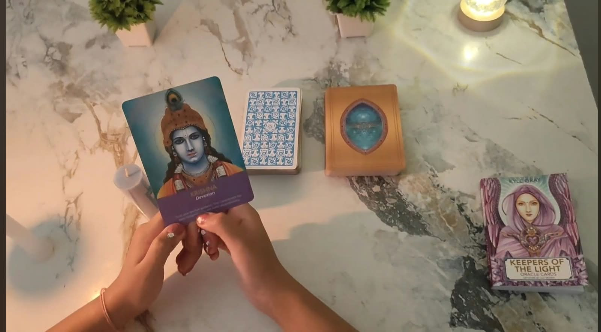

The Tarot Library
An illustrated compendium of the 22 Major Arcana archetypes and the 56 elemental pathways of human experience.
Explore the Library ➔
"I am Smayra. A student of the human psyche, an explorer of symbolism and an independent tarot practitioner."
My world exists at the intersection of tarot, astrology, psychology, philosophy, intuition and the endless complexity of human experience.
Rather than treating tarot as a predictive parlor trick or fatalistic verdict, I approach each reading as an intuitive psychological mirror. Drawing on Carl Jung's concepts of synchronicity, archetypes, and shadow integration, our sessions reveal the subconscious scripts guiding your relationships, career decisions, and soul evolution.
✦ SEVEN SACRED REALMS ✦
Traveling from the celestial cosmos into a personal sanctuary of knowledge, archetypes, and self-discovery.
An illustrated compendium of the 22 Major Arcana archetypes and the 56 elemental pathways of human experience.
Explore the Library ➔Deciphering the cosmic architecture of your psyche: Sun, Moon, and Rising triad, planetary transits, and retrogrades.
Discover Celestial Studies ➔Shadow work, the collective unconscious, dream symbolism, and bridging analytical psychology with esoteric mirrors.
Delve into the Psyche ➔Geometries of inquiry: The Conscious Blueprint spread, The 3-Card Temporal Mirror, Celtic Cross, and relationship dynamics.
Explore Spreads ➔Confidential, compassionate consultations designed to untangle emotional knots, reveal blind spots, and empower your path.
Book a Reading ➔A 12-month solar and lunar roadmap, revealing your dominant yearly archetype, seasonal opportunities, and soul milestones.
Forecast Your Year ➔Bringing tarot to university grounds: "The Conscious Blueprint Testing" and "Help! Kindly Make My Sad Friend Laugh" live reading tables. Real conversations, real transformations, and community energy.
View Campus Work & Community ➔Pause, center your breath, and draw a card. Let your subconscious mind meet the symbol waiting for you today.
The Sun illuminates what was once obscured in subconscious shadows. It signals that your clarity is returning, your personal truth is solidifying, and the fragmented pieces of your journey are aligning into integrated confidence.
Reflective Inquiry: Where have you been withholding your natural warmth or doubtfully dimming your inner light?
ESSAYS ON SYMBOLISM & SOUL
Why tarot is an indispensable map of analytical psychology, archetypal forces, and the inner labyrinth of identity.
In Jungian depth psychology, the Shadow comprises everything we disown, conceal, or repress to gain social acceptance. When a challenging card like The Tower, The Devil, or Nine of Swords appears, it is not an omen of doom—it is a sacred invitation to integrate unacknowledged psychic material into conscious sovereignty.
"One does not become enlightened by imagining figures of light, but by making the darkness conscious."
Why do specific cards appear when you ask specific questions? Carl Jung termed this synchronicity—an acausal connecting principle where internal psychological states mirror external events. Shuffling cards randomizes the physical deck, allowing the subconscious to project its hidden blueprint upon the symbols.
"Synchronicity is an ever-present reality for those who have eyes to see."
The 22 Major Arcana cards depict 'The Fool's Journey'—an exact visual parallel to Jung's individuation process. From initial innocence (The Fool) through encounters with parental archetypes (The Empress & Emperor), crisis of values (The Lovers), solitary truth-seeking (The Hermit), to ultimate self-integration (The World).
"The privilege of a lifetime is to become who you truly are."
✦ REAL TRANSFORMATIONS & VOICES ✦
Real client experiences, WhatsApp conversations, and in-person university testimonials.





"I used to not believe in these things... But after getting it with Smayra, it is not the case. I actually was surprised with how accurately she interpreted it, it made me see my life properly which I was seeing in fragments."
"Your last reading helped a lot and I saw real results after implementing the steps, I really am thanking you from my heart to help me see things clearly. Please can we have another session?"
"Thanks a lot for today's session. I really feel overwhelmed rn and I really needed this. I pray that you remain healthy and happy—it must be exhausting dealing with so many energies."
✦ REAL WORLD SANCTUARY ✦
Glimpses into Smayra's sacred reading space, live consultations, and the tools of symbolic divination.

Chandigarh University — Bridging psychology & tarot for seekers

Singing bowl, crystals, and archetype banners

Major Arcana & elemental diagnostic spread

Oracle cards bridging Eastern mysticism and archetypal philosophy

Preparing the energetic field before each consultation

Unraveling karmic cycles and personal choices
✦ STEP INTO THE SANCTUARY ✦
Tailored one-on-one sessions addressing your questions with psychological clarity, warmth, and depth.
Ideal for targeted questions regarding relationships, career crossroads, or emotional stagnation. Identifies the subconscious narrative behind the dynamic.
Our signature session. A holistic Celtic Cross & Astrology integration exploring all layers: conscious desires, subconscious fears, relational dynamics, and optimal future paths.
A comprehensive 12-month celestial roadmap. Maps your dominant archetype for the year, quarterly milestones, and astrological pivot points for proactive decision-making.